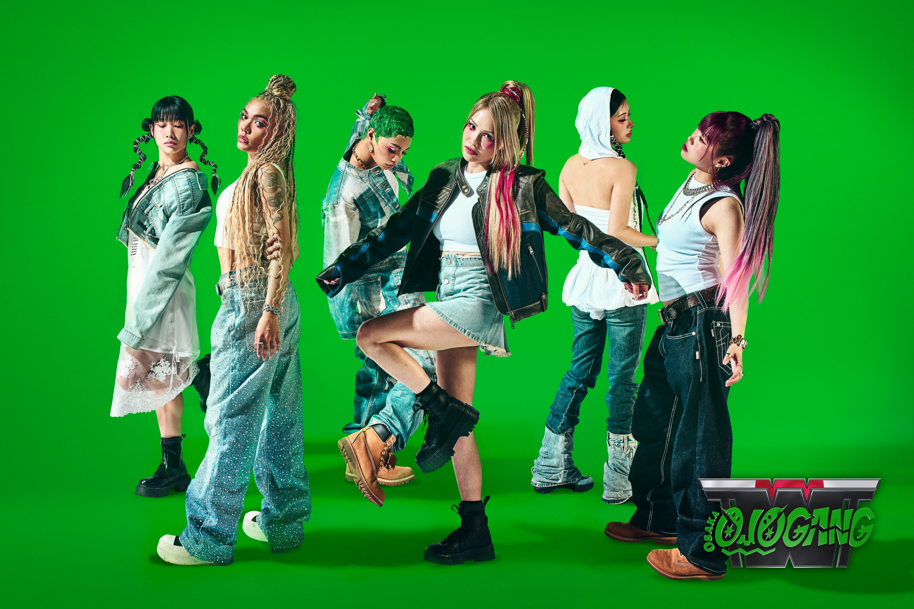
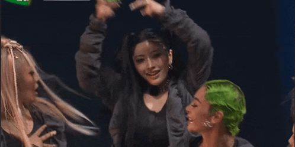
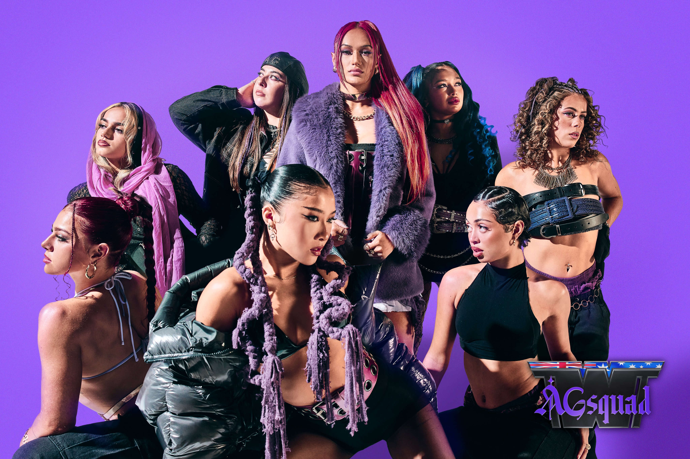
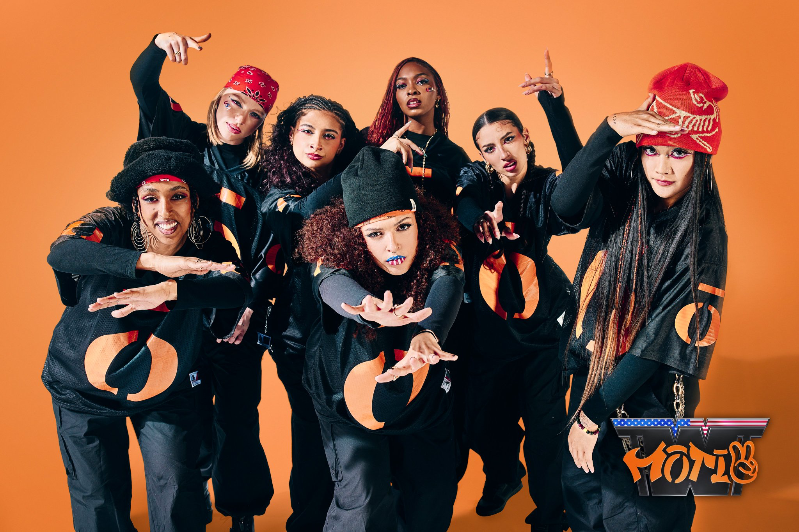
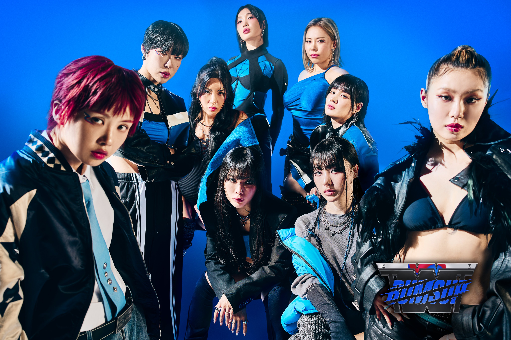
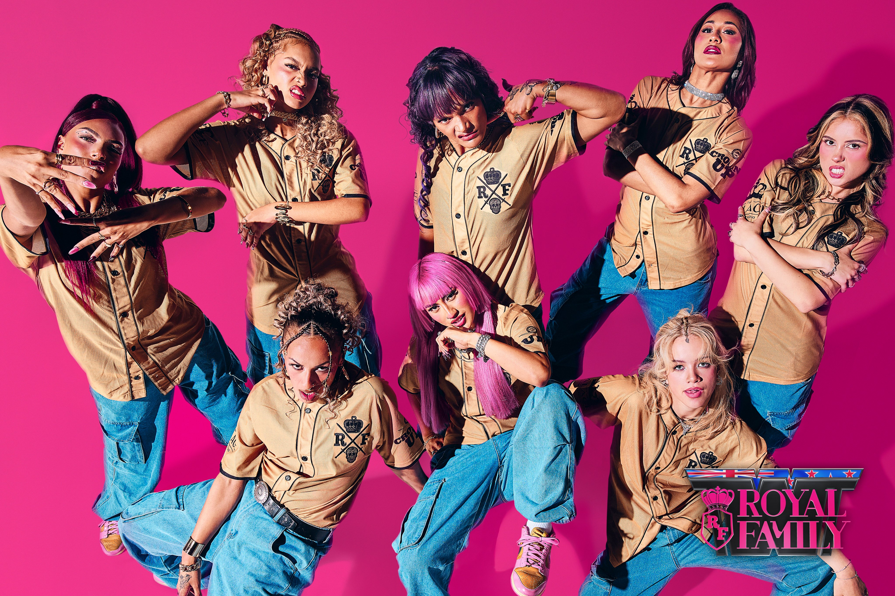

World of Street Woman Fighter
World of Street Woman Fighter is arguably the best Season out of the whole Street Woman Fighter Series. Having all kinds of people like Royal Family, Rie Hata, Ibuki, etc. The Series itself held 6 crews hailing from 5 unique nations. RHTokyo and Osaka Ojo Gang representing Japan, MOTIV for America, Royal Family for New Zealand, AG Squad for Australia, and Last but not least the Season 1 Leaders form each Crew plus Lip J coming together to create BUMSUP to represent Korea.
Osaka Ojo Gang
{kind=link}

Osaka Ojo Gang is a crew based in Japan, with members Uwa, Minami, Juuna, Kyoka, Hana, Ruu, and Leader Ibuki.

When it comes to Osaka Ojo Gang, or just Ojo Gang for short, they admittedly have gotten a lot of criticism from the fans, due to winning, which, I think is a bit unfair. They really are such a cool set of dancers, with all kinds of varied genres. Despite maybe not being the most synchronized at the start, they really came together as a team by the end of it. Which is really something I admire. Go Ojo Gang!!!
AG Squad
{kind=link}

AG Squad is a crew based in Australia, consisting of members Aaliyah, Kaleece, Vanessa, Ruthy Baby, Alysha, Danica, Kyra, and Leader Kaea.
To be completely honest, despite being a crew created for the show, AG Squad is so freaking awesome. It's hard to say otherwise, most being like former Royal Family members, they all have so much experience and it really shows whenever they perform. I really gotta give props to Kyra for being such an amazing choreographer, and also Kaea for just being so cool in general, the coolest Leader ever!!
MOTIV
{kind=link}

MOTIV crew is a based in the US, and has members Abby, Logistix, Nyssa, Kaidi, Bella, Fantaye, and Leader Marlee.
I'm for sure heavily biased, but MOTIV crew is probably the funniest and most down to earth crew on the whole show, a lot of the Hip Hop Crews tend to keep it 100%. I'm so happy for MOTIV crew placing 3rd, even if I personally think they deserved at least 2nd, but it's whatever. They gave amazing performances, their elimination battle, mega crew, etc. I will always live for MOTIV, and especially Marlee's artistry.
BUMSUP
{kind=link}

BUMSUP is a crew based in Korea, consisting of members Leejung, No:ze, Gabee, Hyojin Choi, Aiki, Lip J, Monika, and Honey J.

I'm definitely a sucker for the BUMSUP crew, I mean who wouldn't be, especially if you've watched Street Woman Fighter Season 1? They had a lot of the same problems as Ojo Gang where they struggled to be in sync because of the difference in styles, but they really ended up holding their own until the end. Honestly though, they really had a lot of crew changes due to Monika's Pregnancy, Gabee's Scheduling issues, but also Ri.hey and Gabee both getting injured during the competition, it was tough for a lot of them. Still glad they did as well as they did!
RHTokyo

RHTokyo is a crew based in Japan, consisting of members Ako, ReiNa, Rico Hirai, Nina Neves, Asuka, Rena, Mona, and Leader Rie Hata.

RHTokyo has probably some of if not the strongest Choreos. To be fair, Rie Hata is easily the most experienced Choreographer, creating for the Likes of Big Bang, BTS, Twice, Chris Brown, and more. But even then they have some really cool members, like Rena who was on the previous season of Street Woman Fighter under the Tsubakill crew! I'm honestly just obsessed with all of RHTokyo and their members. Real Hot Tokyo!!
Royal Family
{kind=link}

Royal Family is a crew based in New Zealand, consisting of members Kylie, Tiare, Moana, Maiya, Isla, Zari, Harmz, and Leader Teesha

Royal Family, also known as The Royal Family is quite a crew to have to live up to, the crew having performed for the likes of Rihanna, Justin Beiber, having their Choreo covered by Blackpink, it's such a big crew to have to hold yourself against! Despite being both the youngest member wise, but also the most popular crew wise, it was probably a lot for them, but even then they did so good! Crowns up Royal Family!